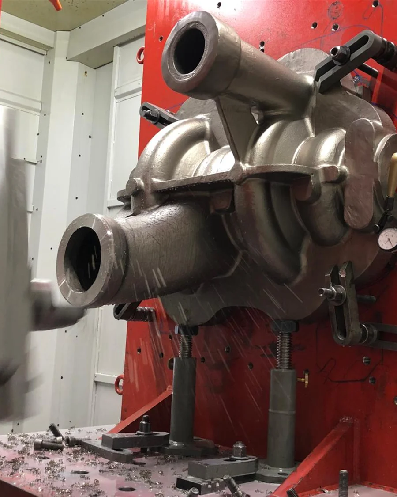
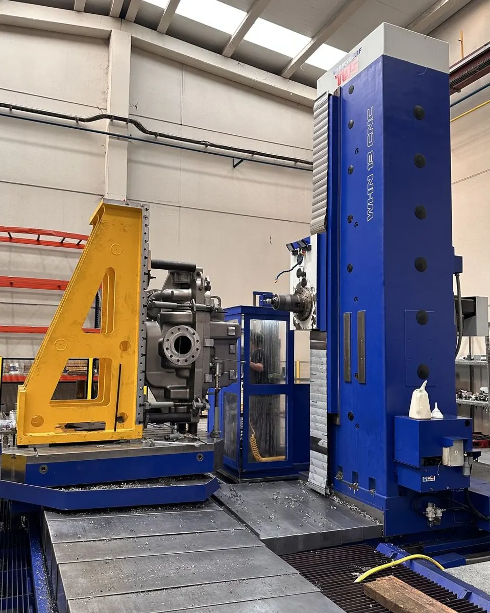

Capacidades
Parque de máquinas y capacidades.
Fresado, torneado y mandrinado CNC, y soldadura certificada, en planta propia. Dimensiones y pesos máximos por operación y por máquina.
Resumen
Nueve máquinas CNC y soldadura certificada.
Programación CAM en Siemens NX. Planta operativa 24 horas en tres turnos.
Fresado
Fresado en 5 ejes.
Caras, ranuras, taladros y geometrías complejas. Tolerancia desde ± 0,005 mm en 5 ejes.
Máquinas de fresado
Trevisan II DS-600 RAM
- Tipo
- Centro de mecanizado
- Dimensiones máx.
- Ø 2.000 × 1.500 mm (Ø 900 mm en torneado)
- Peso máx.
- 2.600 kg (4.500 kg con carga reforzada)
- Tolerancia
- ± 0,010 mm
Trevisan I DS-600
- Tipo
- Centro de mecanizado
- Dimensiones máx.
- Ø 2.000 × 1.100 mm (Ø 900 mm en torneado)
- Peso máx.
- 2.600 kg
- Tolerancia
- ± 0,010 mm
Johnford SV-48H
- Tipo
- Centro de mecanizado vertical
- Dimensiones máx.
- 1.300 × 700 × 630 mm
- Peso máx.
- 1.500 kg
- Tolerancia
- ± 0,015 mm
Deckel Maho DMC 80 U duoBLOCK
- Tipo
- Centro de mecanizado 5 ejes
- Dimensiones máx.
- Ø 900 × 1.450 mm (mesa Ø 800 × 630 mm)
- Peso máx.
- 1.200 a 1.400 kg
- Tolerancia
- ± 0,005 mm

Torneado
Torneado de gran volteo.
Torneado exterior e interior, refrentado y roscado. Volteo hasta Ø 1.600 mm y longitudes hasta 1.966 mm.
Máquinas de torneado
Heller TS 1600 × 1500
- Tipo
- Torno esférico de gran volteo
- Dimensiones máx.
- Ø 1.600 × 1.500 mm (Ø 900 mm esférico exterior)
- Peso máx.
- 2.500 kg
- Tolerancia
- ± 0,015 mm
Doosan Puma 700
- Tipo
- Torno CNC horizontal pesado
- Dimensiones máx.
- Ø 900 × 1.600 mm
- Peso máx.
- 3.000 kg
- Tolerancia
- ± 0,008 mm
Takisawa LS-1000 M
- Tipo
- Torno CNC con herramienta motorizada
- Dimensiones máx.
- Ø 850 × 1.966 mm
- Peso máx.
- 2.000 a 2.500 kg
- Tolerancia
- ± 0,008 mm
Sprint D600 (Spinner TC 600)
- Tipo
- Torno CNC horizontal
- Dimensiones máx.
- Ø 310 a 400 × 650 mm (volteo Ø 600 mm)
- Peso máx.
- 400 a 600 kg
- Tolerancia
- ± 0,005 mm

Mandrinado
Mandrinado de piezas grandes.
Mandrinadora horizontal de columna móvil TOS Varnsdorf WHN 13 CNC. Hasta 12.000 kg sobre mesa giratoria de 360°.
TOS Varnsdorf WHN 13 CNC
- Eje X, longitudinal
- 3.500 a 4.200 mm
- Eje Y, vertical del cabezal
- 2.000 a 2.500 mm
- Eje Z, carnero
- 800 a 1.250 mm
- Eje W, husillo
- 800 mm
- Mesa
- 1.800 × 1.800 a 2.500 × 1.800 mm
- Peso máx. sobre mesa
- 12.000 kg
- Giro de mesa
- 360°, indexado o continuo

Soldadura
Soldadura certificada.
Soldeo por arco con electrodo revestido (111). Soldadores certificados por TÜV SÜD ATISAE y procedimientos según el código nuclear RCC-M.
Datos de soldadura
- Proceso
- Soldeo por arco con electrodo revestido (111)
- Certificación
- UNE-EN ISO 9606-1:2017, TÜV SÜD ATISAE (organismo notificado n.º 0053)
- Rango
- Chapa y tubo, soldadura a tope
- Procedimientos (WPS)
- Según el código RCC-M
- Materiales
- Aceros al carbono, inoxidables, dúplex y superdúplex

Solicitud de oferta
Presupuesto bajo plano.
Estudio de viabilidad técnica y plazo para cada referencia.